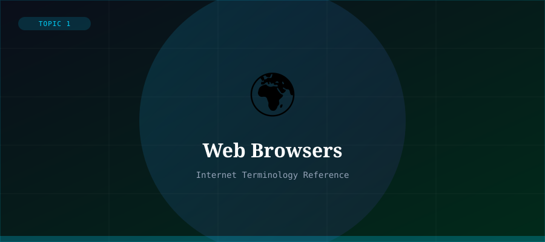

What is a Web Browser?
A web browser is a software application that enables users to access, retrieve, and display content from the World Wide Web. When you type a URL or click a link, the browser sends a request to the appropriate web server, receives the response (usually an HTML file), and renders it into the visual page you see on screen.
The first widely used graphical browser was NCSA Mosaic, released in 1993. It made the Web accessible to ordinary users for the first time. Today, major browsers include Google Chrome, Mozilla Firefox, Microsoft Edge, Apple Safari, and Opera.
How a Browser Works
The browser's rendering engine parses HTML and CSS to build the Document Object Model (DOM) and display the page visually. The JavaScript engine executes scripts to make pages interactive.
Modern browsers also handle security (HTTPS), bookmarks, browser history, extensions, and developer tools — making them powerful platforms in their own right.
Key Browser Functions
- Sending HTTP/HTTPS requests to web servers
- Parsing and rendering HTML, CSS, and JavaScript
- Managing cookies and local storage for sessions
- Enforcing security policies and sandboxing web content
- Supporting extensions and developer debugging tools
Browser Market Share (2024)
Google Chrome dominates the browser market with approximately 65% share globally, followed by Safari at around 19%, Edge at about 4%, Firefox at 3%, and other browsers making up the remainder.
The browser wars of the 1990s and 2000s shaped much of the modern web's standards and drove rapid innovation in browser capabilities.